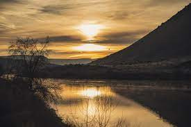

Na Europa eles encontraram espaço nos jardins de chalés ingleses e ganharam notoriedade nas pinturas de Vicent Van Gogh. No entanto, como já citamos acima, foi na Rússia que o girassol se tornou uma cultura agrícola essencial. Eles geravam uma fonte de óleo que podia ser ingerida sem violar as leis dietéticas da igreja, muito respeitadas na época.
Vamos para o youtube youtube
Vamos para a segunda página
passe o mouse por cima